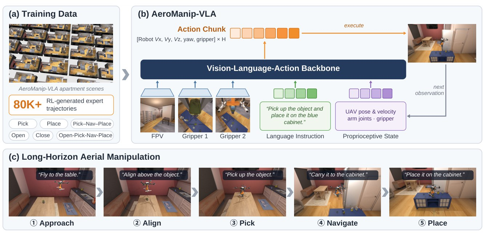
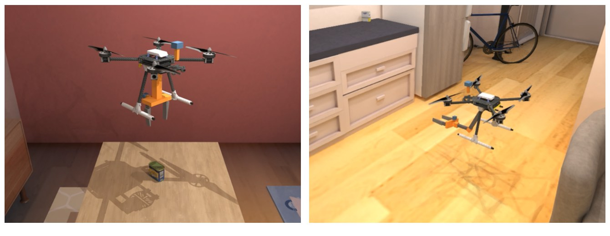
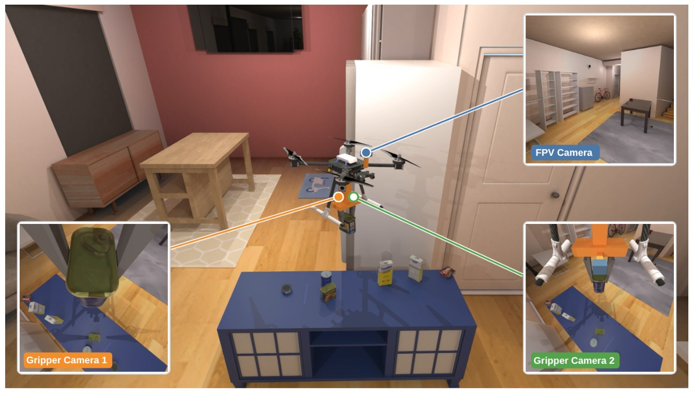
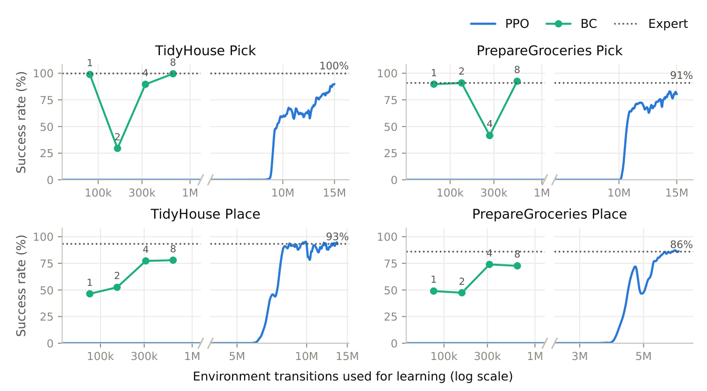
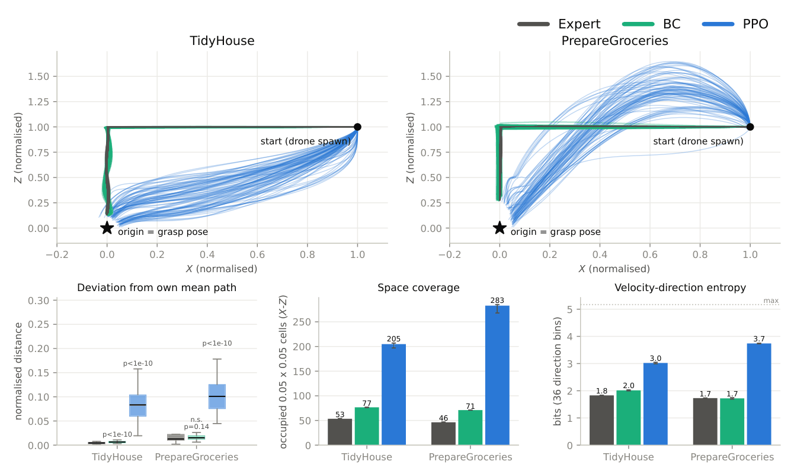
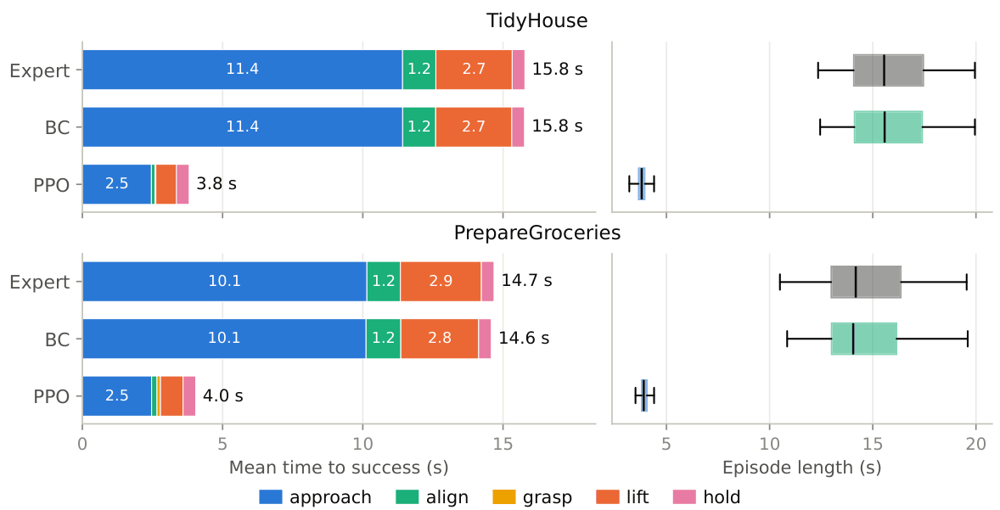
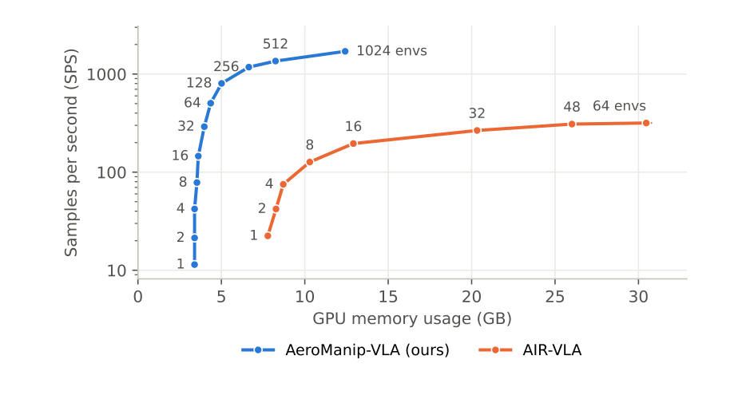

01 · Video
Full Demo Video
All demonstrations on this page, compiled into one video.
02 · Overview
Aerial VLA data at scale, without teleoperation
AeroManip-VLA is a GPU-parallel benchmark for aerial manipulation. Reusable RL policies and expert task rules generate demonstrations automatically, while every rollout is annotated for task progress and flight safety.
Aerial pick-and-place across diverse apartment scenes and objects.

[vx, vy, vz, yaw, gripper]. (c) Long-horizon aerial manipulation decomposed into approach, align, pick, navigate and place.GPU-parallel aerial VLA benchmark
Massively parallel simulation with low-level, payload-aware flight and manipulation control, built on ManiSkill3 and ReplicaCAD.
Demonstrations without teleoperation
Reusable RL policies combined with expert task rules generate data across randomized objects, scenes and initial poses, from basic skills to long-horizon tasks.
Structured analysis & baselines
Automated event labeling and trajectory categorization expose task progress and safety failures; ACT, Diffusion Policy, π0 and π0.5 are benchmarked.
03 · Benchmark
Benchmark Design
Four task settings built from five parameterized skills — PickPlaceOpenCloseNav — executed continuously within a single episode, with grasping realized through simulated physical contact (no attachment or teleportation).
TidyHouse
Object-specific Pick and Place for household rearrangement.
PrepareGroceries
Pick and Place of grocery items for kitchen rearrangement.
PackageDelivery
Outdoor: pick a package from a vehicle, fly to the door, place it on a cabinet.
LongHorizonRearrangement
Long-range navigation, pick-and-place, and opening / closing cabinets and fridges.


04 · Demonstrations
Expert Demonstrations
A privileged hybrid expert combines frozen learned components, rule-based guards, geometric planning and scripted feedback to produce reliable demonstrations in parallel environments. Each tile shows the third-person view (top), onboard RGB (middle) and depth (bottom).
Pick — descend onto the target object and grasp it through physical contact.
RL: Pick (TidyHouse)
RL: Place (TidyHouse)
05 · Reinforcement Learning
Extensive RL
Skill policies are further optimized with PPO in GPU-parallel environments. RL costs far more interaction than behavior cloning, but discovers more diverse and much faster successful behaviors.
Demonstration transitions BC needs to approach expert Pick success, vs. environment interactions PPO needs.
Occupied spatial cells of successful PPO approach paths vs. the expert on PrepareGroceries (205 vs. 53 on TidyHouse).
Mean time to a successful pick for PPO vs. the expert and BC on TidyHouse, mostly from a shorter approach.



06 · 3-DoF Arm
Articulated & Long-Horizon Tasks
With a forward-reaching 3-DoF arm, the aerial manipulator opens and closes fridges and kitchen counters, and chains these interactions with pick, navigation and place in a single continuous episode.
Open & Close
Open fridge
Open kitchen counter
Close fridge
Close kitchen counter
Open → Pick → Navigate → Place
“Open the drawer, take out the bowl, and place it on the dark brown table.”
“Open the fridge, take out the apple, and place it on the dark brown table in the living room.”
07 · Outdoor
Package Delivery
08 · Annotation
Event Annotation & Failure Analysis
Every rollout is labeled with task-specific interaction events and aerial safety constraints — excessive tilt, altitude violations, non-target contact, payload loss, platform stability and clearance — so success is judged jointly with the physics of flight, and failures are categorized rather than just counted.
Success The released object comes to rest inside the goal region (green) with only mild contact.
Failure Cumulative contact force exceeds the limit after release — flagged as a release collision.
Failure cases
Pick · tuna fish can
Place · bowl
Long pick-and-place · tuna fish can
09 · Results
Policy Benchmarking
We evaluate visuomotor imitation learning (ACT, Diffusion Policy) and pretrained VLAs (π0, π0.5) on PrepareGroceries. Pretrained VLAs transfer best, yet Place is consistently easier than Pick — reliable aerial object acquisition remains the main bottleneck.
Can your policy beat π0.5?
Reliable aerial picking is still far from solved. Train and evaluate your method on the AeroManip-VLA dataset, and send us your results — we will add them to this leaderboard.
| Method | Skill | Master Chef Can | Sugar Box | Tomato Soup Can | Tuna Fish Can | Pudding Box | Gelatin Box | Potted Meat Can | Bowl | Mean S.R. |
|---|---|---|---|---|---|---|---|---|---|---|
| ACT | Pick | 2.0 | 0.0 | 0.0 | 0.0 | 0.0 | 0.0 | 10.0 | 18.0 | 29.5 |
| Place | 24.0 | 98.0 | 28.0 | 82.0 | 46.0 | 48.0 | 56.0 | 60.0 | ||
| DP | Pick | 4.0 | 2.0 | 6.0 | 4.0 | 2.0 | 2.0 | 2.0 | 6.0 | 33.9 |
| Place | 50.0 | 90.0 | 50.0 | 78.0 | 82.0 | 80.0 | 32.0 | 52.0 | ||
| π0 | Pick | 6.7 | 6.7 | 10.0 | 20.0 | 13.3 | 13.3 | 13.3 | 6.7 | 38.9 |
| Place | 80.0 | 82.0 | 52.0 | 88.0 | 52.0 | 68.0 | 86.0 | 24.0 | ||
| π0.5 | Pick | 8.0 | 6.0 | 6.0 | 12.0 | 14.0 | 16.0 | 16.0 | 14.0 | 44.6 |
| Place | 60.0 | 88.0 | 64.0 | 92.0 | 96.0 | 96.0 | 78.0 | 48.0 |
Success rate (%) per skill–object pair on AeroManip-VLA PrepareGroceries. Cell shading encodes the value; bold marks the best method per column and skill.
10 · Scalability
Parallelized GPU Simulation & Rendering
Each free-flying airframe is modeled with six virtual joints, so thousands of aerial manipulators — physics at 240 Hz, three onboard RGB-D cameras per step — run concurrently on one GPU.
with ~3,900 parallel environments using 32.7 GB
throughput of AIR-VLA at comparable memory (317 SPS with 64 environments, 30.5 GB)
GPU memory vs. AIR-VLA at the same N = 64 (4.4 vs. 30.5 GB), with 1.6× throughput
From one aerial manipulator to a grid of parallel apartments on a single GPU.

BibTeX
@article{huang2026aeromanipvla,
title = {AeroManip-VLA: Scalable Vision-Language-Action Learning for
Aerial Manipulation with RL-Generated Demonstrations},
author = {Huang, Rui and Mu, Yanlin and Li, Lidong and Wang, Yucong
and Yan, Zichen and Zhao, Lin},
journal = {arXiv preprint},
year = {2026}
}